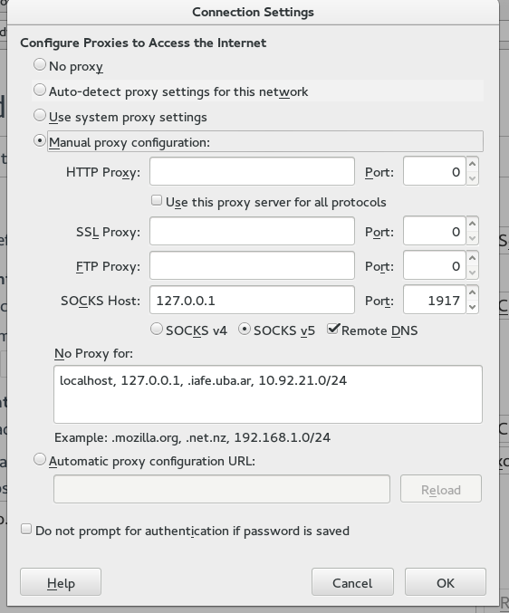

Cómo usar un tunel SSH como proxy para HTTP
Es muy común estar en un lugar donde tenemos problemas o limitaciones para navegar por internet y que necesitemos una alternativa. Sea por un proxy que bloquea cosas, un DNS que resuelve mal o porque no queremos ser espiados.
La manera más simple es hacer un tunel SSH contra un equipo al que nos podamos conectar y usarlo como puente (proxy) para salir a Internet.
Hay 2 maneras de usar un tunel SSH la más conocida es un tunel para un único puerto.
Por ejemplo. Estoy en mi notebook llamada trator.local y quiero llegar al puerto 1982 de la maquina terminus.midominio.com. Pero no puedo porque ese puerto está cerrado en mi red.
Pero sí puedo llegar al puerto 22 (SSH) de la maquina puente.midominio.com. Entonces puedo hacer un tunel contra puente.midominio.com redireccionando el puerto 1982 de mi maquina al 1982 de terminus.midominio.com utilizando puente.midominio.com como tunel.
1982[trantor]---SSH(((internet)))--->[puente]---(((INTERNET)))--1982--->[terminus]
Para esto hay que ejecutar::
ssh -L 1982:terminus.midominio.com:1982 mi_usuario_en_puente@puente.midominio.com
Luego puedo conectarme al puerto 1982 de mi maquina (127.0.0.1:1982) y voy a estar accediendo a terminus.
Ahora bien, usar esta manera para navegar por internet es muy molesto, ya que sería imposible estar haciendo un tunel para cada equipo al que quiero llegar. Para poder sacar todo el tráfico de mi browser por tunel.midominio.com puedo crear un tunel 'especial' que usa el protocolo SOCKS, y luego configurar mi firefox para que lo utilice.
Primero se genera el tunel:
ssh -N -D 1917 mi_usuario_en_puente@puente.midominio.com
Luego en firefox se configura de la siguiente manera.
Con eso ya podemos navegar con nuestro proxy. Una buena manera de validar es ingresar a http://ifconfig.me y validar la IP por la que estamos llegando.
Comments
Comments powered by Disqus